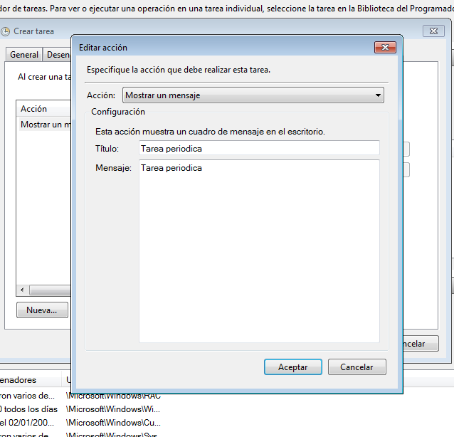
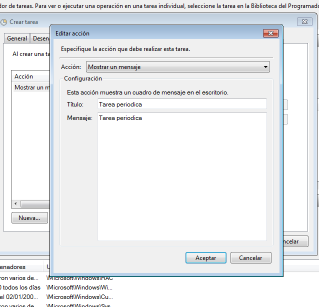

- Módulo: Administración de Sistemas Operativos
- Título del trabajo Tareas Programadas
- Componentes del grupo: Iván José Hernández Regalado
- Curso Académico: 2014/2015
- Fecha de entrega: 19 de Enero de 2015
Mi idea fue la de crear un script que nos permita ejecutar los tres tipos de tareas de linux siguiendo los pasos del mismo. La primera parte del script quedaría de esta forma y no es mas que la información y utilización del script.
Ahora vamos con la parte de la tarea diferida que tendrá dos partes, una para ejecutar la tarea ahora y la otra para hacerlo en un momento determinado.
La siguiente es la parte de la tarea periodica que además tiene la opción de borrar las tareas periodicas anteriores.
Por ultimo la parte de la tarea asíncrona tendrá las tres opciones para forzarlo diariamente, semanalmente o mensualmente.
En mi caso voy a probar el script usando el script que vacía la papelera y comprobar que al programar la tarea efectivamente se borra la papelera pero se puede ejecutar cualquier otro o incluso comandos del sistema.
Vamos a comprobar el primer caso de la tarea diferida que es que se ejecute inmediatamente despues de programar la tarea.
Vamos a comprobar el segundo caso de la tarea diferida que es que se ejecute en un momento especificado.
En la primera opción podemos borrar o no las tareas periodicas anteriores y luego decidimos cada cuanto tiempo queremos que se ejecute.
Especificamos el script y decidimos que se ejecute diariamente por ejemplo para que se fuerze a ejecutarse una vez al dia.
En windows podemos ejecutar la tareas programadas de manera gráfica con el programador de tareas.
Comenzaremos creando una tarea diferida que apage el sistema pasados 60 segundos. Para ello le damos a nueva tarea. En general especificamos el nombre de la tarea, en desencadenadores ponemos que sea ejecute una vez y en acciones ponemos el comando de apagado del sistema. Comprobamos que nos salta una pantalla de advertencia que dice que el sistema se apagará en 1 minuto y con lo cual la tarea está bien realizada.
Vamos a programar la tarea periodica para que nos muestre un mensaje por pantalla. Creamos una nueva tarea y en desencadenadores ponemos que se ejecute diariamente por ejemplo a una hora que podamos comprobar que se ejecuta correctamente y en acciones ponemos que muestre un mensaje.
 

Para la tarea asíncrona se realizará parecida a la anterior pero especificando en configuración de la tarea que se reintente ejecutarse cada minuto si no se ha ejecutado aún y utilizaremos la accion de comprobación y reparación de discos duros.